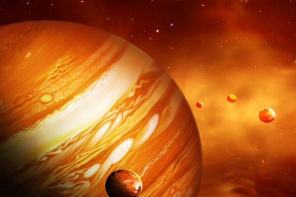
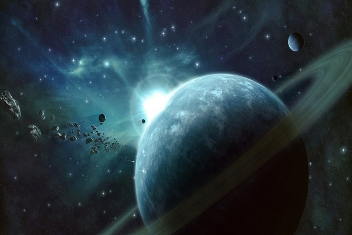

Интересные факты
- гравитация Солнца примерно в двадцать восемь раз превышает гравитацию Земли;
- свет доходит от Солнца до Земли за восемь минут;
- примерно установленный возраст Солнца составляет 4,6 миллиарда лет;
- Солнце проживёт ещё 4-5 миллиардов лет;
- Ватикан лишь в 1992 году публично признал, что Земля действительно вращается вокруг Солнца;
- Солнце вращается вокруг центра Млечного Пути подобно тому, как Земля вращается вокруг Солнца;
- примерно через миллиард и сто миллионов лет яркость Солнца увеличится на десять процентов, что повлечёт за собой конец всякой жизни на Земле.
Солнце
Солнце — одна из звёзд Галактики Млечный Путь и единственная звезда Солнечной системы. Вокруг Солнца обращаются другие объекты этой системы: планеты и их спутники, карликовые планеты и их спутники, астероиды, метеороиды, кометы и космическая пыль. Эффективная температура поверхности Солнца — 5780 кельвин. Поэтому Солнце светит почти белым светом, но прямой свет Солнца у поверхности Земли приобретает некоторый жёлтый оттенок из-за более сильного рассеяния.
Солнце на карте
Солнце — ближайшая к Земле звезда. Средняя удалённость от Земли — 149,6 млн км — приблизительно равна астрономической единице, а видимый угловой диаметр при наблюдении с Земли, как и у Луны, — чуть больше полградуса (31—32 минуты). Солнце находится на расстоянии около 26 000 световых лет от центра Млечного Пути и вращается вокруг него, делая один оборот за 225—250 миллионов лет. Орбитальная скорость равна 217 км/с.
Интересные факты
- Меркурий — самая маленькая и самая близкая к Солнцу планета;
- запущенный в 2004 году зонд «Мессенджер» проработал на меркурианской орбите до 2015 года;
- Меркурий можно увидеть невооружённым глазом;
- сутки на Меркурии длятся немногим меньше полугода на Земле — 176 дней;
- на нём нет смены времён года;
- из всех планет Солнечной системы у Меркурия самая вытянутая орбита;
- Меркурию достаётся в семь раз больше солнечной энергии, чем Земле;
- с поверхности Меркурия Солнце выглядит втрое более крупным, чем с поверхности Земли.
Меркурий
Меркурий — ближайшая к Солнцу планета Солнечной системы, наименьшая из планет земной группы. Названа в честь древнеримского бога торговли — быстрого Меркурия, поскольку она движется по небу быстрее других планет. Её период обращения вокруг Солнца составляет всего 87,97 дней — самый короткий среди всех планет Солнечной системы.
Меркурий на карте
Среднее расстояние Меркурия от Солнца чуть меньше 58 млн км (57,91 млн км). Видимое расстояние Меркурия от Солнца, если смотреть с Земли, никогда не превышает 28°. Ось Меркурия имеет наименьший наклон из всех планет Солнечной системы (около 1/30 градуса). Поверхность Меркурия покрыта ударными кратерами и внешне похожа на лунную, что указывает на отсутствие внутренней геологической активности.
Интересные факты
- венерианский год длится 225 земных дней;
- день на Венере длиннее, чем год — 243 земных дня;
- Венеру можно легко увидеть с Земли невооружённым взглядом;
- первая фотография Венеры из космоса была сделана в 1962 году аппаратом «Маринер-2»;
- первая посадка беспилотного космического аппарата на Венеру была осуществлена в 1970 году советским зондом;
- на Венере нет смены времён года;
- высокая температура поверхности Венеры вызвана мощным парниковым эффектом;
- из всех планет Солнечной системы только Венера вращается вокруг Солнца по часовой стрелке;
- на Венере идут дожди из серной кислоты.
Венера
Венера — вторая по удалённости от Солнца планета Солнечной системы, наряду с Меркурием, Землёй и Марсом принадлежащая к семейству планет земной группы. Названа в честь древнеримской богини любви Венер. По ряду характеристик считается «сестрой» Земли. Венерианский год составляет 224,7 земных суток. Она имеет самый длинный период вращения вокруг своей оси (в среднем около 243 земных суток) среди всех планет Солнечной системы и вращается в направлении, противоположном направлению вращения большинства планет.
Венера на карте
Среднее расстояние Венеры от Солнца — 108 млн км. Расстояние от Венеры до Земли меняется в пределах от 38 до 261 млн км. Её орбита очень близка к круговой. Период обращения вокруг Солнца равен 224,7 земных суток. Наклон орбиты к плоскости эклиптики равен 3,4°. По размерам Венера довольно близка к Земле. Венера не имеет естественных спутников. Венера имеет плотную атмосферу, состоящую более чем на 96 % из углекислого газа. Атмосферное давление в 92 раза больше, чем на поверхности Земли.
Интересные факты
- средняя глубина океанов, покрывающих 70% поверхности планеты, равняется четырем километрам;
- образование континентов произошло в результате постоянного движения земной коры, первоначально на Земле существовал один континент, известный как Пангея;
- лучи света преодолевают путь от Солнца к Земле за 500 секунд;
- удары молний обрушиваются на Землю около 100 раз всего лишь за секунду (получается 8,6 млн. в день);
- около 100 тонн небольших метеоритов оказываются ежедневно в атмосфере Земли;
- на земном ядре температура такая же, как и на поверхности Солнца (5 500 °C);
- ежегодно происходит сдвиг континентов на два сантиметра;
- Земное ядро, состоящее в основном из железа и никеля, имеет диаметр около 2,5 тысяч км.
Земля
Земля — третья по удалённости от Солнца планета Солнечной системы. Самая плотная, пятая по диаметру и массе среди всех планет и крупнейшая среди планет земной группы, в которую входят также Меркурий, Венера и Марс. Единственное известное человеку в настоящее время тело Солнечной системы в частности и Вселенной вообще, населённое живыми организмами. Научные данные указывают на то, что Земля образовалась из солнечной туманности около 4,54 миллиарда лет назад и вскоре после этого обрела свой единственный естественный спутник — Луну. Жизнь, предположительно, появилась на Земле примерно 4,25 млрд лет назад, то есть вскоре после её возникновения. Приблизительно 70,8 % поверхности планеты занимает Мировой океан, остальную часть — континенты и острова. Внутренние области Земли состоят из толстого, очень вязкого слоя, называемого мантией.
Земля на карте
Земля обращается вокруг Солнца и делает вокруг него полный оборот примерно за 365,26 солнечных суток — сидерический год. Ось вращения Земли наклонена на 23,44° относительно перпендикуляра к её орбитальной плоскости, это вызывает сезонные изменения на поверхности планеты с периодом в один тропический год — 365,24 солнечных суток. Сутки составляют примерно 24 часа. Гравитационное воздействие Луны на Землю является причиной возникновения океанских приливов. Также Луна стабилизирует наклон земной оси и постепенно замедляет вращение Земли.
Интересные факты
- тонкая атмосфера Марса состоит в основном из углекислого газа;
- у Марса нет магнитного поля;
- из-за отсутствия озонового слоя солнечная радиация на Марсе чрезвычайно опасна;
- лишь треть всех когда-либо отправленных на Марс космических аппаратов достигла своей цели;
- гравитация Марса в два с половиной раза слабее, чем на Земле;
- марсианские сутки длиннее земных на 37 с половиной минут;
- марсианские песчаные бури могут захватывать огромные области и длиться месяцами
- лишь треть всех когда-либо отправленных на Марс космических аппаратов достигла своей цели.
Марс
Марс — четвёртая по удалённости от Солнца и седьмая по размерам планета Солнечной системы; масса планеты составляет 10,7 % массы Земли. Названа в честь Марса — древнеримского бога войны, соответствующего древнегреческому Аресу. Иногда Марс называют «красной планетой» из-за красноватого оттенка поверхности, придаваемого ей минералом маггемитом.
Марс на карте
Марс — четвёртая по удалённости от Солнца (после Меркурия, Венеры и Земли) и седьмая по размерам (превосходит по массе и диаметру только Меркурий) планета Солнечной системы. Масса Марса составляет 0,107 массы Земли, объём — 0,151 объёма Земли, а средний линейный диаметр — 0,53 диаметра Земли. Рельеф Марса обладает многими уникальными чертами. Тонкая атмосфера Марса состоит в основном из углекислого газа.
Интересные факты
- газовый гигант Юпитер — самая крупная планета в Солнечной системе;
- у Юпитера самое мощное в Солнечной системе магнитное поле;
- день на Юпитере длится 10 земных часов, а год — 12 земных лет;
- у Юпитера наибольшее число естественных спутников в Солнечной системе — их целых 79;
- Юпитер — самая быстро вращающаяся планета в Солнечной системе;
- Юпитер за счёт своей мощной гравитации выполняет роль своеобразного щита, частично защищая землю от комет, так как он притягивает их к себе.
Юпитер

Юпитер — крупнейшая планета Солнечной системы, пятая по удалённости от Солнца. Наряду с Сатурном, Ураном и Нептуном, Юпитер классифицируется как газовый гигант. Современное название Юпитера происходит от имени древнеримского верховного бога-громовержца.
Юпитер на карте
Экваториальный радиус Юпитера равен 71,4 тыс. км, что в 11,2 раза превышает радиус Земли. Юпитер — единственная планета, у которой центр масс с Солнцем находится вне Солнца и отстоит от него примерно на 7 % солнечного радиуса. Масса Юпитера в 2,47 раза превышает суммарную массу всех остальных планет, вместе взятых, в 317,8 раз — массу Земли и примерно в 1000 раз меньше массы Солнца.
Интересные факты
- на Сатурне есть ярко выраженная смена времён года, один сезон длится более семи земных лет;
- знаменитые кольца Сатурна были открыты астрономами в 1610 году;
- Сатурн — самая далёкая планета, которую можно увидеть с Земли невооружённым глазом;
- до сих пор не существует единой теории образования колец Сатурна;
- Сатурн не имеет твёрдой поверхности;
- Сатурн имеет не совсем шарообразную форму, скорость его вращения так велика, что он сплющивает сам себя;
- на одном из спутников Сатурна, Энцеладе, теоретически допускается существование водных форм жизни под толщей льда.
Сатурн
Сатурн — шестая планета от Солнца и вторая по размерам планета в Солнечной системе после Юпитера. Сатурн, а также Юпитер, Уран и Нептун, классифицируются как планеты-гиганты. Сатурн назван в честь римского бога земледелия. Символ Сатурна — серп.
Сатурн на карте
Среднее расстояние между Сатурном и Солнцем составляет 1430 млн км. Двигаясь со средней скоростью 9,69 км/с, Сатурн обращается вокруг Солнца за 10 759 суток (примерно 29,5 лет). Расстояние от Сатурна до Земли меняется в пределах от 1195 до 1660 млн км. Сатурн обладает заметной системой колец, состоящей главным образом из частичек льда, меньшего количества тяжёлых элементов и пыли.
Интересные факты
- день на Уране длится 17 земных часов, а год — 84 земных года;
- с поверхности Земли Уран с большим трудом, но можно разглядеть невооружённым глазом;
- атмосфера Урана — самая холодная из известных, её температура составляет около - 224 градусов Цельсия;
- у Урана 27 спутников;
- у Урана есть кольца, но не такие заметные и ярко выраженные, как у Сатурна;
- Уран визуально кажется сине-зелёным из-за присутствия незначительного количества метана в атмосфере;
- сила магнитного поля в северном полушарии Урана в десять раз больше, чем в южном;
- крупнейший спутник Урана — Титания, его диаметр равен примерно половине диаметра Луны.
Уран
Уран — планета Солнечной системы, седьмая по удалённости от Солнца, третья по диаметру и четвёртая по массе. Была открыта в 1781 году английским астрономом Уильямом Гершелем и названа в честь греческого бога неба Урана. Уран стал первой планетой, обнаруженной в Новое время и при помощи телескопа. Несмотря на то, что порой Уран различим невооружённым глазом, более ранние наблюдатели принимали его за тусклую звезду. В недрах Урана и схожего с ним Нептуна отсутствует металлический водород, но зато много льда в его высокотемпературных модификациях.
Уран на карте

Уран — наименее изученная планета Солнечной системы. Ориентация Урана в пространстве отличается от остальных планет Солнечной системы — ось вращения лежит «на боку» относительно плоскости обращения планеты вокруг Солнца. До 80% планеты состоит из жидкостей, а в центре планеты находится твёрдое ядро. Атмосфера состоит в основном из водорода и гелия, с несколькими процентами метана. Масса Урана почти в пятнадцать раз больше массы Земли.
Интересные факты
- на Нептуне дуют самые сильные в Солнечной системе ветра, их скорость достигает 2100 км/ч;
- Нептун вырабатывает больше тепла, чем получает его от Солнца;
- из всех планет в нашей системе Нептун — самая холодная;
- крупнейший спутник Нептуна, Тритон, примерно через три с половиной миллиарда лет будет разорван его гравитацией, после чего его обломки образуют ещё одно кольцо вокруг планеты;
- окрестности Нептуна посещались лишь одним зондом — Вояджером-2, в 1989 году, зонд прошёл на расстоянии в 3000 километров от северного полюса Нептуна;
- год на Нептуне длится примерно 165 земных лет.
Нептун

Нептун — восьмая и самая дальняя от Земли планета Солнечной системы. Планета была названа в честь римского бога морей. Её астрономический символ — стилизованная версия трезубца Нептуна. Обнаруженный 23 сентября 1846 года, Нептун стал первой планетой, открытой благодаря математическим расчётам. Нептун по составу близок к Урану, и обе планеты отличаются по составу от более крупных планет-гигантов — Юпитера и Сатурна.
Нептун на карте
По диаметру находится на четвёртом месте, а по массе — на третьем. Масса Нептуна в 17,2 раза, а диаметр экватора в 3,9 раза больше земных. Атмосфера Нептуна, подобно атмосфере Юпитера и Сатурна, состоит в основном из водорода и гелия, наряду со следами углеводородов и, возможно, азота, однако содержит более высокую долю льдов: водного, аммиачного, метанового. Недра Нептуна, как и Урана, состоят главным образом изо льдов и камня.


{kind=link}
{kind=link}
{kind=link}
{kind=link}
{kind=link}
{kind=link}
{kind=link}
{kind=link}